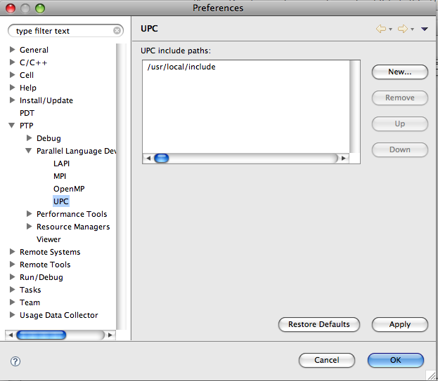
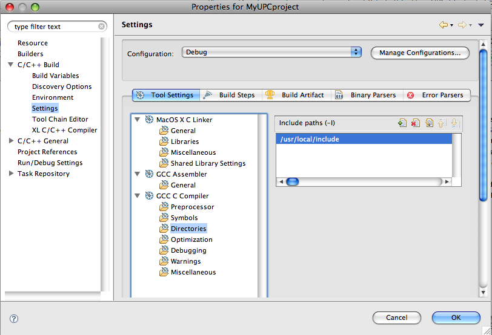
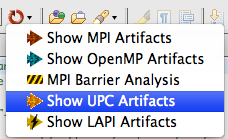
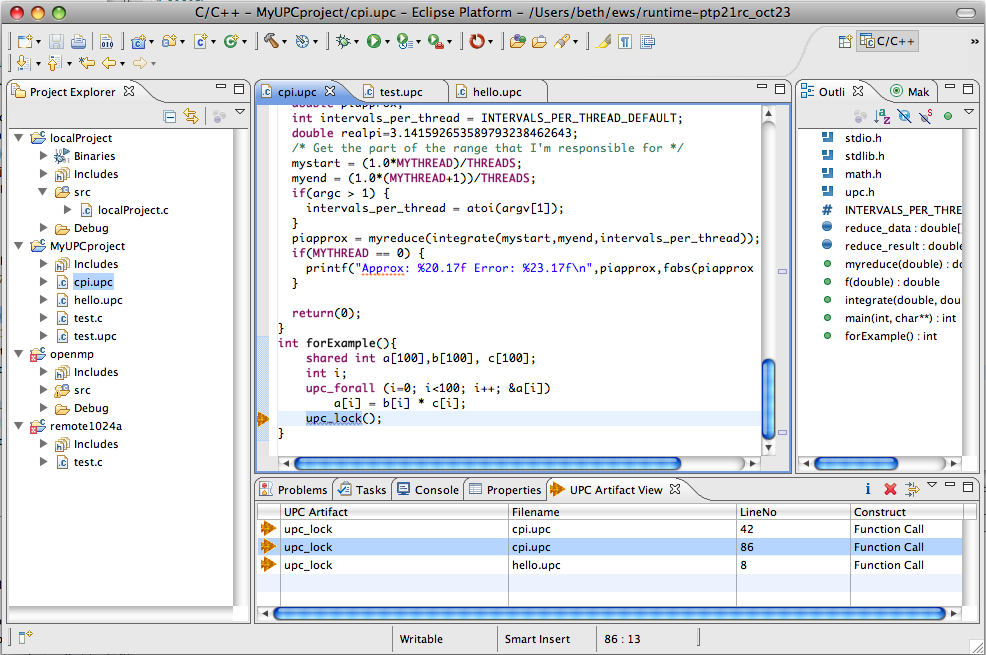
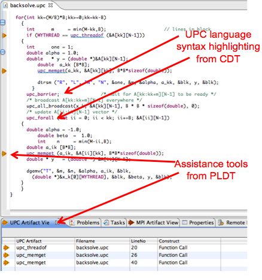
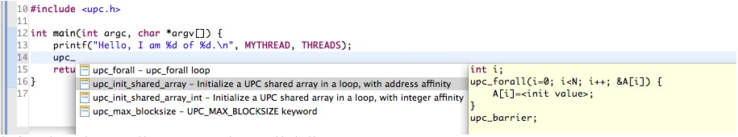
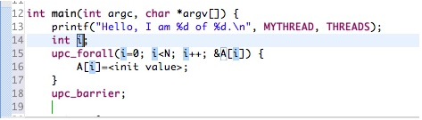
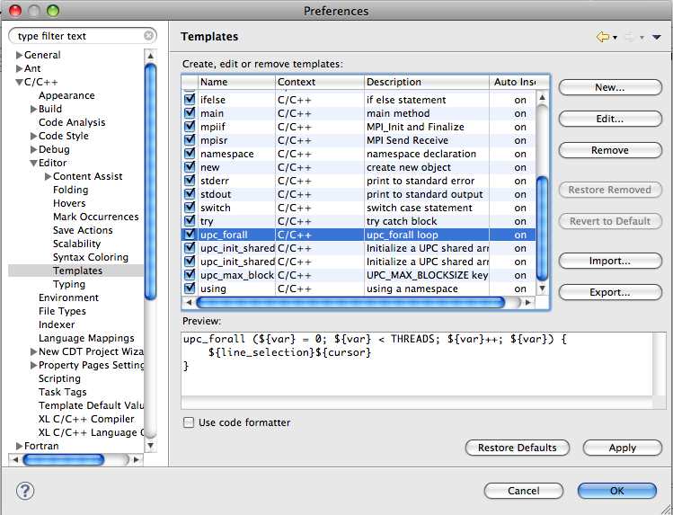

The basic instructions for running the UPC tools (finding UPC artifacts, navigating to source code, using Help) are the same as for running the MPI tools, but the basics and some differences for UPC are noted here.
Note that UPC features are an optional feature of CDT, and are not in the default installation. It requires an alternative parser, etc. from the regular CDT C and C++ support. See UPC tools setup on the PTP wiki for how to install CDT optional features for UPC support.
See also the information on UPC New Project wizards and toolchains in CDT.
Set up UPC Preferences. Here you can specify the UPC include file location.
This is used for the PLDT analysis feature (not for building).
It helps to determine whether APIs and other artifacts are related to UPC.
Alternatively, if you leave the checkbox selected indicating "Recognize APIs by prefix (upc_) alone?"
then the header file is not used. This is a much simpler setup and seems less error prone.
So if the checkbox is checked (which is the default), PLDT does not need the header file to find UPC artifacts.
It may still ask for it, but won't be used if this is checked.

By default, files of extention ".upc" are considered UPC files. See UPC tools setup on the PTP wiki for how to enable UPC support (parsing, editor highlighting, etc.) on other files including files with extensions of .c, .h, etc.
Set up UPC project include paths, compiler options, etc. in Project Properties.
Note that if you use one of the CDT UPC New Project wizards and toolchains,
some of this may already be set up for you.

Finding UPC artifacts is similar to finding MPI or OpenMP artifacts.
Select the file (or container: project/folder) to search in the Project Explorer view,
and Select "Show UPC Artifacts" from the PLDT menu.

UPC artifacts found and shown in the UPC Artifact View. Note that "artifacts" are currently defined as UPC APIs. Language features such as upc_forall, upc_barrier, THREADS, etc will not be listed in the UPC Artifact View. Note that they are highlighted with syntax coloring in the editor. The UPC Preferences page lets you select you to determine UPC artifacts. We recommend using the prefix (upc_) to determine this, as it is less confusing and less error-prone.

Note that currently only UPC APIs (function calls) are identified as artifacts. UPC language features are highlighted by CDT.

Some code templates for useful UPC idioms and commonly-used language constructs are included with CDT and PTP.
Note that the optional UPC feature of CDT, as well as the UPC feature of PLDT, must both be installed to see and use all the UPC templates.
To activate code templates, position your cursor where you want to enter the code,
and press control-space twice.
You will see a possibly long list of templates to insert.
To cull the list to just UPC features, type "upc" or "upc_" before hitting control-space (twice).
The templates that start with the prefix you typed are listed.

If you choose the highlighted template above, the content will be inserted into your code:

Some variables in the template are replaceable by your own values. These are highlighted in blue in this example. Type your variable over these and all instances will be changed to match.
Templates can be easily changed and added to by the user.
See the Eclipse Preferences, C/C++ > Editor > Templates for more information.

See also MPI Code Templates.
If you have ideas for more UPC (or other) templates, please consider contributing these to PTP! Send email to ptp-dev@eclipse.org (Developer mailing list).